Ideia boa é a que aconteceDa pauta à loja728 lojas35 campanhasDTC e B2BMedido loja a lojaIdeia boa é a que aconteceDa pauta à loja728 lojas35 campanhasDTC e B2BMedido loja a loja
Resumo executivo · a proposta em uma página
Duas operações dedicadas, DTC e B2B, medidas loja a loja.
01O desafio35campanhas em 2027
23 no DTC e 12 no B2B, até 8 em produção no mesmo dia, em 728 lojas onde o investimento na produção é do franqueado.
02Nossa resposta14pessoas · 12,6 FTE
Dois núcleos dedicados, sem fila compartilhada, dimensionados pelas horas reais medidas no nosso sistema de gestão.
03Como entregamos5etapas com critério de saída
Briefing e aprovação peça a peça no Ariuno, lojas modeladas em 3D antes de produzir e engenharia com aproveitamento de chapa.
04Como medimosD+15ciclo fechado em cada campanha
Cada peça com código único: recebimento em D+2, instalação com foto em D+7 e a próxima tiragem calibrada pelo que foi instalado.
Já somos fornecedor cadastrado da Alpargatas, a 2,5 km da sede.
Open cost completo e três modelos comparados, no documento comercial.
Recomendação: setup e handover antes do contrato, para a primeira campanha não ser de aprendizado.
01
Capítulo 01 de 09
O desafio
Lemos o escopo como operação contínua, não como lista de peças.
0135 campanhas em 2027
02O desafio é simultaneidade
03O investimento é do franqueado
04A tese
01O desafio02Quem é a 75 LAB03O que já entregamos04Como vamos operar05Rede e gestão06Tecnologia antes de produzir07Rastreio peça a peça08Na prática: São João 202709Como começamos
O que entendemos do desafio
35 campanhas em 2027. Duas operações diferentes.
Lemos o escopo como operação continuada. Esta é a volumetria de vocês devolvida no recorte que a proposta exige: DTC e B2B separados, porque a lógica de cada um é outra.
CriaçãoKV, desdobramento por formato, engenharia e arte-final
ProduçãoMínimo de 3 fornecedores, protótipo em loja e controle de qualidade
LogísticaMínimo de 3 fornecedores, envio loja a loja e conformidade fiscal
Rede e gestãoSharePoint, cronograma integrado, status e reports
DTClojas próprias, franquias e quiosques
23campanhas no ano, com possibilidade de 2 movimentos a mais · 4 a 5 por trimestre
658→728lojas ao longo de 2027
5formatos de loja: premium, standard, light, compacta 3 e layout antigo, mais quiosques e flagships
100dias úteis: o ciclo ideal do briefing até a chegada em loja
3níveis de investimento por campanha: primária, secundária e tática
2 a 3projetos especiais por ano: corner, ilha, ambientação e ceno de ativação
B2Bvarejo alimentar e especializado
12campanhas no ano, cerca de 3 por trimestre
16peças por campanha: 12 táticas mais 4 estratégicas, somando os dois canais
8artes rápidas por semana, em 1 a 2 dias úteis, incluindo vídeos de até 30 segundos
2.000+clientes no especializado (departamento, calçadista e chinelaria), além do alimentar
~30ambientações de gerenciamento de categoria por ano
25MPDVs institucionais, revisados uma vez por ano conforme o novo VBI
Fonte: Escopo de Contratação DTC e B2B 2027, Alpargatas. O escopo é o mesmo nos dois canais.
O desafio não é volume. É simultaneidade.
Recuando os 100 dias úteis que o briefing chama de cenário ideal, o calendário B2B de vocês fica entre seis e oito campanhas em produção ao mesmo tempo em quase todo o primeiro semestre, e chega a oito no mesmo dia.
6
campanhas em produção no mesmo dia · 15/05/2027
Arraste a linha verde ou use os botões para ver o pico
Fonte: Calendário Havaianas Brasil 2027, canal B2B, do Escopo de Contratação. Barra = 100 dias úteis até a loja, feriados nacionais descontados; tracejado = ciclo corrido antes de 09/11/2026.
Quem paga a produção é o franqueado. Ele paga pelo que é produzido, não pelo que é instalado.
O briefing coloca a otimização do investimento do franqueado ao lado da unicidade de marca e da excelência de execução. Entre a gráfica e a loja existem duas perdas que hoje ninguém mede.
Produzido
100%é o que o franqueado paga
Perda 1Não chega
A loja pagou e ficou sem o material. A reclamação chega na marca, não na agência.
Entregue
?hoje ninguém sabe
Perda 2Chega e não é instalado
O custo saiu inteiro e o retorno é zero.
Instalado
?é o que gera resultado
O que a 75 LAB faz com isso
Medimos as duas perdas peça a peça e usamos o número para calibrar a tiragem seguinte. O franqueado passa a pagar pelo que de fato vai para a loja.
O resultado não se decide na ideia.
Decide-se no intervalo entre a aprovação e a loja. E quase ninguém mede esse intervalo.
Aprovação
Loja
O intervalo
Prazo
A campanha certa fora da data vale zero.
Conformidade
A arte certa com a informação legal errada custa mais do que não ter feito.
Rastreabilidade
Quem não sabe qual versão foi para a gráfica descobre na loja.
02
Capítulo 02 de 09
Quem é a 75 LAB
Por que existimos, o que nos diferencia e quem responde pela conta.
01Propósito
02Diferencial
03A estrutura
04Quem responde pela conta
05Nossos números
06Clientes
01O desafio02Quem é a 75 LAB03O que já entregamos04Como vamos operar05Rede e gestão06Tecnologia antes de produzir07Rastreio peça a peça08Na prática: São João 202709Como começamos
Nosso propósito
Transformar intenção em realidade no ponto de venda.
A 75 LAB nasceu da soma de dois lados que quase nunca se sentam à mesma mesa: o varejo e a indústria. Por mais de 15 anos vivemos a distância entre a intenção comercial de uma marca e o que de fato acontece na loja. Existimos para fechar essa distância.
IndústriaLançamento, categoria, P&Lo lado de quem vende para o varejo
← valor →
VarejoLayout, execução, aprovaçãoo lado de quem opera a loja
Não somos uma agência tradicional. Somos uma aceleradora de trade.
Modelo tradicional
BriefingRetrabalhoAtrasoVerba evapora
Modelo 75 LAB
IntençãoImersãoSoluçãoExecuçãoResultado
01Vivemos o trade, não só aprendemos
Os sócios vêm do varejo e da indústria: os dois lados do balcão estão na mesma mesa.
02Solução certa, nunca de prateleira
Montamos a estrutura pela demanda de cada cliente, não um pacote pronto.
03Para cada desafio, a equipe certa
Hub de especialistas e fornecedores, com governança ponta a ponta e sem markup oculto.
04Prova acima de promessa
Medimos o que entregamos: peça a peça, loja a loja.
0%projetos aprovados
−0%de custo de produção com o fornecedor certo
0+PDVs positivados
+0anos no trade, dos dois lados do balcão
Fonte: 75lab.com.br, números da 75 LAB.
Montamos a estrutura, não só a campanha.
A 75 LAB é uma aceleradora de trade marketing, parceira de desenvolvimento de negócios. Não entregamos um formato de prateleira: montamos a estrutura e os projetos pela demanda de cada cliente. O modelo se apoia em quatro frentes, e elas vivem na mesma casa.
Uma casa
Clique em cada frente
Frente 01
Estratégia
Leitura de canal, calendário integrado e curadoria do que entra em cada campanha. É o que decide o que não fazer quando seis campanhas convivem.
Leitura de canal, calendário integrado e curadoria do que entra em cada campanha. É o que decide o que não fazer quando seis campanhas convivem.Direção de arte, engenharia de peça e arte-final. Uma só direção nos dois canais, que é o que sustenta a unicidade de marca pedida no briefing.Coordenamos cotação, protótipo, QA e logística, e vocês não ficam limitados à nossa rede: trabalhamos com os fornecedores já homologados por vocês, com os nossos parceiros em cinco famílias, ou com os dois. Podemos indicar novos, mas a homologação segue sendo processo de vocês.Ariuno para demandas e entregas, SharePoint com base de lojas, layouts e cronograma integrado, painel de SAC para ocorrências da rede, rastreio peça a peça e BIM e AR antes de produzir. É frente própria, não um extra de proposta.
Os dois lados do balcão, na mesma mesa.
É o mesmo time que opera a conta, não uma equipe montada para a concorrência.
0anos
Daniel Coimbra
de trade marketing, do lado de quem vende para o varejo
Quem responde pela conta é quem opera.Daniel CoimbraCaique Beckercofundadores da 75 LAB
Rota e tempo: Google Maps, 28/10/2026 · 75 LAB, Av. das Nações Unidas, 12.901 · Alpargatas, Av. das Nações Unidas, 14.261.
Números da 75 LAB · 12 meses medidos no nosso sistema
A 75 LAB em números: a operação que já rodamos hoje.
0entregas concluídas em 12 meses, entre jobs e etapas
0jobs concluídos de ponta a ponta no mesmo período
0clientes com demanda aberta nos últimos 12 meses
0jobs ativos ao mesmo tempo no pico, em 26/10/2026
0clientes atendidos em paralelo nesse mesmo pico
0dias úteisprazo mediano do pedido à entrega em baixa complexidade
0dias úteisprazo mediano em alta complexidade: stands, enxovais e obras
0h/mêsde trabalho apontadas tarefa a tarefa, de julho a setembro
Dados da própria 75 LAB, não de cliente. Fonte: Ariuno, sistema de gestão da 75 LAB · 28/10/2025 a 27/10/2026 · horas apontadas de jul a set/2026. Baixa complexidade: jobs com até 8 h de trabalho; alta: acima de 16 h.
Já trabalhamos os dois canais que vocês têm.
Gôndola de supermercado e loja de categoria: são as duas lógicas de ponto de venda do escopo de vocês, e as marcas que atendemos vivem nelas.
Canal alimentarsupermercado, atacado e conveniência
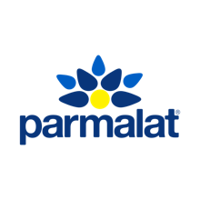
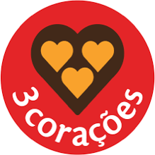
Varejo especializadoloja de categoria e rede franqueada
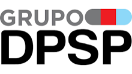
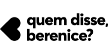
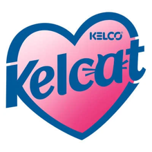
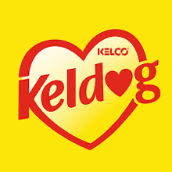
03
Capítulo 03 de 09
O que já entregamos
Criação, engenharia e execução, com prova.
01Cases
02Engenharia e aproveitamento de chapa
03Depoimento e vídeos
01O desafio02Quem é a 75 LAB03O que já entregamos04Como vamos operar05Rede e gestão06Tecnologia antes de produzir07Rastreio peça a peça08Na prática: São João 202709Como começamos
Já entregamos as três etapas que uma agência de criação não executa.
Gire as peças com o mouse, veja a foto ou abra em AR no celular
Ponta de gôndola de lavadoras numa loja 24 horas, sem janela para instalar. Projeto técnico em três níveis de custo, LED integrado com retomada automática após queda de energia e guarda-corpo nas três laterais.
Módulo de 1,78 × 0,99 × 1,45 m · três rotas · produção de 15 dias úteis · instalação prevista para 10/11/2026
Categoria técnica, de venda assistida, num varejo que vai do nacional ao regional. Curadoria dos 19 recursos do produto em três destinos e enxoval com perfil de loja e instrução de montagem para cada nível.
18 peças em dois caminhos visuais, em quatro níveis de enxoval: P, M, G e Premium
Alltak · feira Future Print
Projeto especial é obra
Stand de lançamento de marca. Projeto executivo completo (layout, cobertura, painéis de LED, rampa, expositores e comunicação) mais as artes aplicadas, do lambe-lambe de padrão ao neon flex.
Ambientes separados para Decor e Signs, com parede de amostras e carros envelopados no piso do stand
A peça é desenhada para a fábrica, não só para o render.
Todo executivo sai com vistas, cortes, planificado com faca 1:1, lista de materiais e o estudo de aproveitamento de chapa. Quando a geometria desperdiça material, a gente muda a peça.
Estudo de chapa · display Président (Lactalis) · chapa de 2000 × 1000 mm
Laterais duplas
84 embalagens de 150 g por chapa · 3 displays
Laterais simples
140 5 displays
Versão adotada
168 6 displays · 59% da chapa
2×o produto exposto por chapa comprada, mudando a peça e não o fornecedor
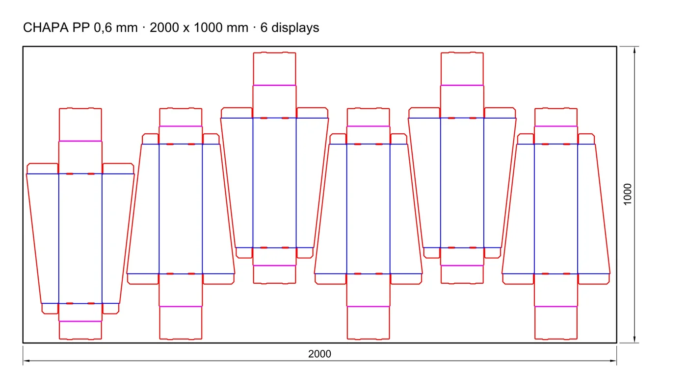
Executivos que entregamos · clique para ampliar a folha
Fonte: projetos executivos da 75 LAB (outubro de 2026), em DXF e PDF A2. Aproveitamento com 6 mm entre peças e 10 mm de margem.
Quem já viveu um cronograma com a gente · stand Alltak Decor
“Desde a primeira reunião, me surpreenderam com essa parte de planejamento.
“Um programa viável de execução. Datas de aprovações, datas de execução, finalização para a entrega do stand.”
Marcelo AbreuAlltak
Projetos da 75 LAB em vídeoClique num vídeo para assistir no celular ao lado
Vídeos de projetos da 75 LAB: Instagram @setecincolab, site 75lab.com.br e acervo de cases.
04
Capítulo 04 de 09
Como vamos operar
Processo, fluxo, sistema e time desenhados para o calendário de vocês.
01O processo da pauta à loja
02Fluxo e controles
03Simulador do Ariuno
04O time dedicado
05Como dimensionamos
01O desafio02Quem é a 75 LAB03O que já entregamos04Como vamos operar05Rede e gestão06Tecnologia antes de produzir07Rastreio peça a peça08Na prática: São João 202709Como começamos
Da pauta à loja em cinco etapas, e nenhuma começa antes de a anterior fechar.
Exemplo real do calendário de vocês: São João, na loja em 17 de maio de 2027, contado para trás nos 100 dias úteis do briefing.
1Pauta10 d.u. · 18/12 a 05/01
Entra
Briefing do cliente
Sai
Pauta validada
Só avança quando
Escopo, prazo e formatos acordados por escrito
2Direção20 d.u. · 05/01 a 02/02
Entra
Pauta validada
Sai
KV ou rota criativa
Só avança quando
Aprovação formalizada e registrada
3Engenharia20 d.u. · 02/02 a 04/03
Entra
KV aprovado
Sai
Arte-final e planta técnica
Só avança quando
Checagem técnica e legal assinada
4Produção35 d.u. · 04/03 a 26/04
Entra
Arte-final
Sai
Material produzido
Só avança quando
Três orçamentos, protótipo testado e QA de lote
5Loja15 d.u. · 26/04 a 17/05
Entra
Material produzido
Sai
Material posicionado
Só avança quando
Comprovação de entrega e de execução
18/12
05/01
02/02
04/03
26/04
17/05 · na loja
A produção leva 35 dos 100 dias. É a etapa que não comprime, por isso a concorrência de três fornecedores abre em 04/03, e não em abril.
A arte rápida de 2 dias não entra na mesma fila do ciclo de 100.
Via rápidaArte rápida · 1 a 2 dias úteis
PedidoTriagem e SLACriaçãoAprovaçãoEntrega
Ciclo de campanha100 dias úteis
PautaDireçãoEngenhariaProduçãoLoja
Os seis controles que valem para as duas filas
Tráfego
Todo pedido entra no Ariuno por formulário e vira card com responsável, prazo e etapa. Nada corre por e-mail solto.
SLA por tipo
Prazo visível para vocês. O tempo esperando aprovação aparece separado do atraso da agência.
Versão e aprovação
Cada versão fica no card, com data e autor. Qual arte foi para a gráfica está no sistema.
SharePoint e acervo
Base de lojas, layouts, artes finais e cronograma integrado, no lugar que vocês já usam.
Fornecedor
Três orçamentos, protótipo testado em loja e QA de lote antes de liberar a tiragem.
Conformidade
Checagem técnica e legal assinada, faturamento conferido antes do pagamento e SEFAZ sob nossa gestão.
Ariuno personalizado · criado para atender a Alpargatas
Entrada, saída e avaliação de cada material, passo a passo.
EntradaSaídaAvaliação
Sem login: o trade de vocês abre o link da campanha e marca as peças. As peças do escopo já vêm mapeadas por canal e tipo de campanha.
A peça que vale para vários formatos vira uma por formato: Premium, Standard, Light, Compacta, Quiosque. Na demonstração, 10 pedidas viram 15.
O time entrega a arte dentro da própria peça e ela passa a aparecer como esperando vocês. Cada versão fica guardada com data e autor.
Vocês aprovam ou marcam o ajuste em cima da peça: ponto numerado, seta, área destacada, anexo e print colado.
Aprovadas, esperando vocês, em ajuste, em criação e sem arte. As aprovadas entram no quadro de produção num card por campanha.
ariuno.com.br/?briefingFee=…
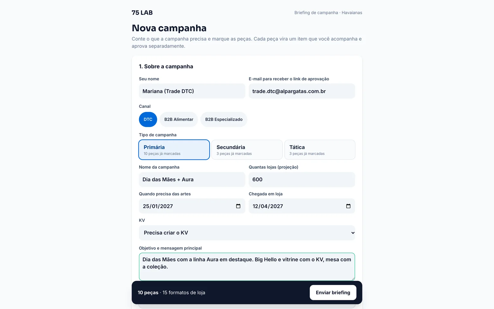
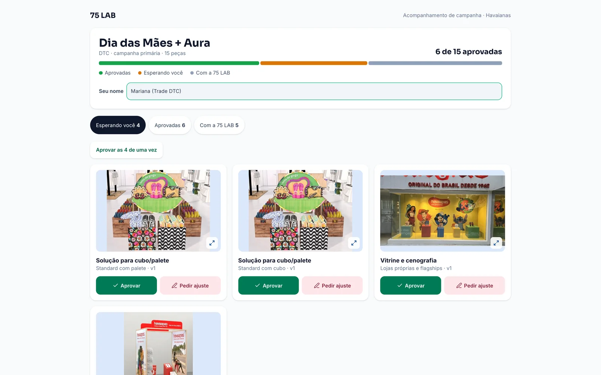
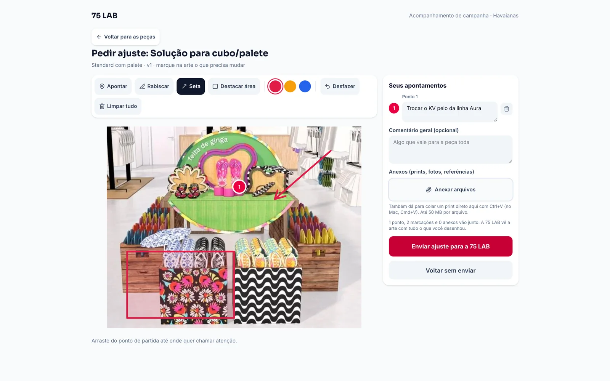
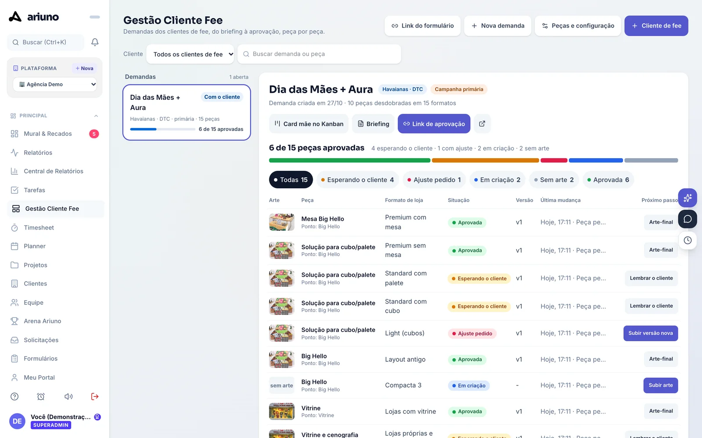
Passo 1 de 5
1Entrada · o trade pede pelo link2 e 3Uma peça por formato, com a arte dentro4Avaliação · ajuste marcado na arte5A situação de cada material
Fonte: Ariuno, sistema de gestão da 75 LAB, em modo demonstração · campanha de exemplo Dia das Mães + Aura.
Um time só de vocês: 6 pessoas no DTC, 5 no B2B.
Dedicada trabalha só na conta de vocês (100% = 176 h por mês)Compartilhada parte do tempo em cada canal, com a porcentagem declaradaFTE = quantas pessoas em tempo integral isso soma
Núcleo DTC6,8 FTE · 1.197 h/mês
Gestor(a) de conta DTCpauta, cronograma integrado e SharePoint
Sênior100%176 h/mês
Designer 3D e engenharia de PDVengenharia por formato, executivo e loja em 3D
Pleno100%176 h/mês
Designer gráfico e arte-finaldesdobramento do KV nos formatos
Pleno100%176 h/mês
Produtor(a) de fornecedorestrês orçamentos, fornecedor e QA de lote
Sênior100%176 h/mês
Produtor(a) de campo e SACprotótipo em loja e atendimento à rede
Pleno100%176 h/mês
Analista de logísticaenvio loja a loja e ocorrências
Pleno100%176 h/mês
Núcleo B2B5,8 FTE · 1.021 h/mês
Gestor(a) de conta B2Balimentar e especializado, pauta e status
Sênior100%176 h/mês
Designer gráfico sêniorKV, desdobramento e as 16 peças da campanha
Sênior100%176 h/mês
Designer de artes rápidasas 8 artes da semana e vídeos curtos
Pleno100%176 h/mês
Produtor(a) de fornecedoresorçamento, negociação e amostras
Pleno100%176 h/mês
Analista de logística e implementaçãooperador logístico, GC e ativações
Pleno75%132 h/mês
Compartilhados entre os dois núcleos
Diretor(a) de criação30% DTC · 53 h30% B2B · 53 huma só direção nos dois canais: unicidade de marca
Arquiteto(a) e 3D25% DTC · 44 h50% B2B · 88 hprojetos especiais, lojas modeladas e GC
O tamanho do time saiu da nossa performance medida, não de estimativa.
1Nossa performance: horas por entrega, medidas na 75 LAB
2,5harte rápida, post ou peça digital
3,2hadaptação e arte-final de peça tática
8,6hengenharia e executivo de peça estrutural
3,5horçamento com três fornecedores, por item
4,1hacompanhamento de produção, por item
72hprojeto especial: stand, corner, cenografia
2Multiplicamos pelo volume do briefing
DTC0 h/ano · 705 h/mês
B2B0 h/ano · 616 h/mês
Criação, engenharia e AR · 2.859 h | 3.305 h
Produção · 2.076 h | 1.546 h
Logística, rede e implementação · 1.722 h | 840 h
Atendimento e planejamento · 1.147 h | 1.056 h
Direção de criação e fiscal · 656 h | 648 h
3Convertemos em FTE
horas por ano × 1,25 de folga para a sobreposição ÷ (12 meses × 140 h produtivas)
DTC6,8calculado 6,3 FTE
B2B5,8calculado 5,5 FTE
Fonte: Ariuno, 11.060 apontamentos de hora da 75 LAB (jul a out/2026), média por tarefa; volumes do Escopo de Contratação 2027. 140 h produtivas = 80% de 176 h. Criação com +15% para rodadas de aprovação de marca.
05
Capítulo 05 de 09
Rede e gestão
Atendimento à rede, base de lojas, cronograma, SharePoint e report numa central só.
01A central da rede
02Atendimento por WhatsApp e e-mail
03Cronograma, SharePoint, status e report
01O desafio02Quem é a 75 LAB03O que já entregamos04Como vamos operar05Rede e gestão06Tecnologia antes de produzir07Rastreio peça a peça08Na prática: São João 202709Como começamos
Simulação · a central que montamos para a conta
Uma central só para a rede, a agência e vocês.
E-mail e WhatsApp numa caixa só: cada conversa vira ticket ligado à loja, com prazo.
As 728 lojas com formato, planta, fotos e pontos de visibilidade.
DTC e B2B no mesmo calendário, cada campanha nas cinco etapas.
O acervo fica no SharePoint de vocês, organizado por campanha, formato e loja.
Onde cada campanha está agora e o relatório que chega sem ninguém pedir.
01Atendimento à rede02Base de lojas e layouts03Cronograma integrado04SharePoint integrado05Status e report
Simulação da central de rede e gestão da 75 LAB com dados de exemplo · nenhum dado de cliente. Lojas, franqueados e números fictícios.
A rede fala com a gente por WhatsApp e e-mail. Cada conversa vira ticket ligado à loja.
1O franqueado escreve
No WhatsApp ou no e-mail da conta. O número cadastrado já identifica a loja.
2Vira ticket com prazo
Tema marcado (layout, montagem, não chegou, tiragem) e resposta em até 1 dia útil.
3A base de lojas responde
Formato, planta, pontos de visibilidade e as peças enviadas para aquela loja, na mesma tela.
4Resolve e registra
Reenvio, guia de montagem da loja ou foto da instalação. Tudo fica no histórico.
5Vira dado
Cada ocorrência entra no fechamento de ciclo e calibra a tiragem da próxima campanha.
O que a base de lojas guarda, loja a loja
Formato e metragem
Planta e pontos de visibilidade
Fotos da fachada e da execução
Peças de cada campanha
Contato do franqueado
Histórico de tickets
A planta muda, a base muda no mesmo dia, e o SharePoint recebe a versão nova.
Simulação com dados de exemplo · nenhum dado de cliente.
Vocês sabem onde cada coisa está sem precisar perguntar.
Cronograma integrado
DTC e B2B no mesmo calendário, cada campanha nas cinco etapas, com a data de loja e o pico de simultaneidade à vista.
SharePoint integrado
O acervo fica no SharePoint de vocês, por campanha, formato e loja, com a versão aprovada e quem aprovou.
Status e report
Status quinzenal etapa a etapa e report semanal automático: o que aconteceu e o que precisa de vocês.
A cadência da gestão
Toda horapainel ao vivo e atendimento à rede
Semanalpauta com o trade e report por e-mail
Quinzenalstatus de cada campanha
Mensalfechamento de ciclo e indicadores
Trimestralestratégia e calendário seguinte
Simulação com dados de exemplo · nenhum dado de cliente.
06
Capítulo 06 de 09
Tecnologia antes de produzir
A loja modelada e a IA no lugar certo do processo.
01As lojas que já modelamos
02Onde a IA entra
01O desafio02Quem é a 75 LAB03O que já entregamos04Como vamos operar05Rede e gestão06Tecnologia antes de produzir07Rastreio peça a peça08Na prática: São João 202709Como começamos
Já modelamos as lojas de vocês. A peça é aprovada dentro da loja antes de existir.
Cinco ambientes em 3D, com o enxoval de São João aplicado. Com a planta e as fotos de cada loja, modelamos as 728: cada franqueado vê, no próprio espaço, como a campanha vai ficar antes de a faca ser cortada.
Clique numa loja para ver todos os renders
Compra mais certa
A dimensão errada aparece no modelo, não no protótipo: corrigir é um arquivo, não 728 reimpressões.
Criação mais impactante
A visibilidade é decidida vendo a peça no big hello, na vitrine e na mesa de cada formato.
Teste mais barato
Rodar uma alternativa custa uma tarde, não um lote.
* Modelos feitos pela 75 LAB apenas com base em visitas às lojas e em referências visuais, sem planta nem manual de marca de vocês.
Sem IAleitura e decupagemum caminho por vezformato a formatomedida e planta técnicaconferência manualtime e cliente
Com IAIAdecupagem automática do briefingIAvários caminhos visuais para escolherIAos 5 formatos adaptados juntosTimemedida e planta técnicaIAconferência de texto automáticaTimetime e cliente
O que vocês ganham
Mais alternativas
Vários caminhos de conceito antes de escolher, no tempo em que antes saía um.
Formatos em paralelo
As 5 versões de loja são adaptadas juntas, não uma depois da outra.
Menos erro de texto
Decupagem e conferência automática contra o briefing antes da revisão humana.
Tempo onde importa
O time sai do repetitivo e gasta horas em direção, engenharia e execução.
Onde a IA não entra
Direção de arte · texto legal e regulatório · aprovação final · assinatura técnica de planta
Como protegemos
Contas corporativas, com material de cliente fora de treinamento · revisor humano nomeado em toda peça · histórico de versão com quem aprovou e quando · ferramentas: ChatGPT e Claude
07
Capítulo 07 de 09
Rastreio peça a peça
O que acontece depois do caminhão vira dado.
01Como funciona
02O painel
03O que vocês ganham
04Fechamento de ciclo
05O compromisso
01O desafio02Quem é a 75 LAB03O que já entregamos04Como vamos operar05Rede e gestão06Tecnologia antes de produzir07Rastreio peça a peça08Na prática: São João 202709Como começamos
Cada peça tem um código único e conta a própria história.
ALP-SJ27-TST-0412testeira · São João 2027 · loja 0412
1 · Código na peça
Cada peça sai da gráfica com etiqueta própria, não um QR de campanha.
2 · Expedição
O scan na saída do fornecedor registra o que foi enviado para cada loja.
3 · Recebimento
A loja escaneia ao receber: relatório em D+2.
4 · Instalação com foto
Montada, fotografada, com GPS: relatório em D+7.
5 · Auditoria
Continua lá? Amostra por loja e ocorrência automática de quem não leu.
6 · Painel
Tudo ao vivo, por loja, rede, formato e estado, desde o primeiro envio.
QR em etiquetapara material de campanha, descartável e em massatesteira, tag de gancheira, display de caixa, bandeirola, adesivo de chão
GPS ou BLEpara ativo caro que voltacorner, ilha, ambientação de GC, cenografia de flagship, mesa big hello
Já está no aro scan abre a página da peça, com montagem, vídeo e AR, e registra loja, GPS e fotoem uso nas peças que produzimos, não é protótipo de apresentação
Painel do QR · demonstração com dados de exemplo
O scan da loja chega ao painel na hora, com GPS e foto.
Clique nas abas para trocar a vista do painel
projetos.75lab.com.br/produtos/painel
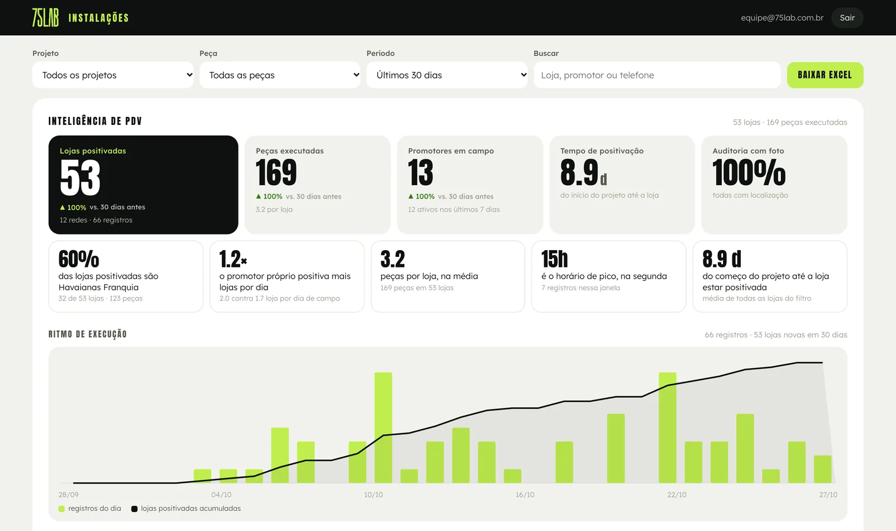
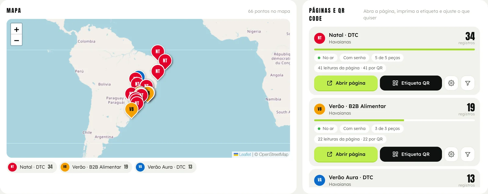
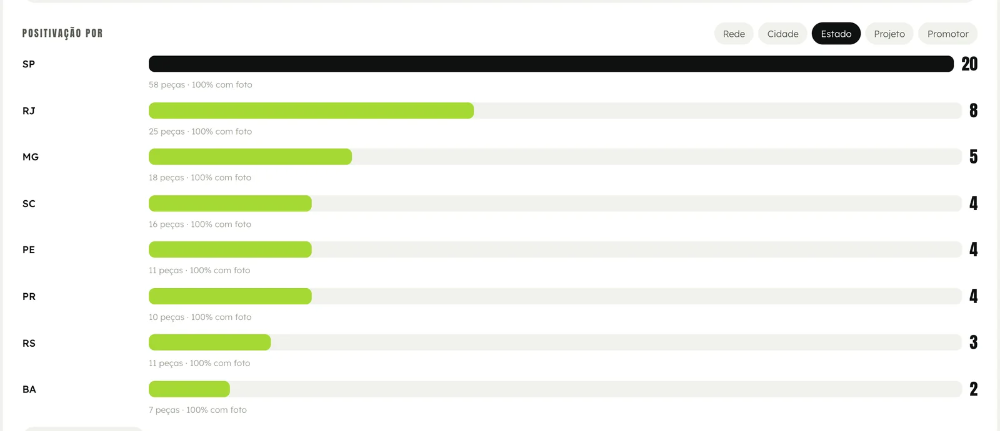
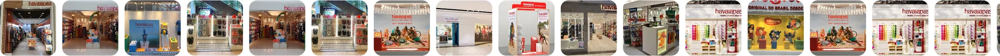
Cada leitura gravaloja, rede, promotor próprio ou compartilhado, GPS com a precisão e a foto da fachada.
Loja pelo GPSaté 150 m é a mesma loja: o painel conta lojas, não leituras.
Leitura prontalojas positivadas, ritmo do dia, tempo até a loja e ranking por rede, cidade e estado.
Excel e link ao vivotudo em Excel num clique, e o trade de vocês acompanha por um link sem login.
Números e ritmoMapa das lojasPor estado
Fonte: painel do QR da 75 LAB em modo demonstração · dados de exemplo, nenhum dado de cliente.
O que hoje é relato de campo vira dado auditável.
Com a tecnologia embarcada na peça, cada campanha devolve informação que hoje não existe, e ela vale depois da campanha, não só durante.
A peça
Auditoria de positivação
Conferência de que o material foi realmente posicionado, loja a loja, e não apenas enviado.
Book de fotos ao vivo
A execução chega fotografada conforme acontece, sem esperar relatório de fim de ciclo.
Data e hora de entrada
Quando o material entrou em cada loja: atraso de fornecedor vira número.
Entrada por recorte
Quanto da campanha entrou por praça, rede e formato de loja, e onde emperrou.
Correlação com venda
A positivação medida cruzada com o sell-out de vocês: quanto o material move a venda.
Próxima tiragem
A quantidade seguinte sai do que de fato foi instalado: o ganho que se repete a cada ciclo.
A tiragem da próxima campanha é a instalação medida na anterior.
O fechamento de ciclo em D+15 não é um relatório de prestação de contas: é a tiragem da campanha seguinte, calibrada pelo que de fato foi instalado.
0peças enviadas e não instaladas no exemplo de São João
EnviadoInstalado
PeçaEnviado × instaladoAdesãoPróxima tiragem
Testeira
728671
92%690peças
Bandeirola
728702
96%720peças
Tag de gancheira
728588
81%610peças
Display de caixa
412301
73%320peças
Mesa big hello
186179
96%182peças
Dados de exemplo · nenhum dado de cliente neste material.
O compromisso, conferível no dia 30.
Já operamos rastreio em conta ativa, e os números daquele cliente não entram neste material: não abrimos dado de cliente nenhum, nem o de vocês. O que entra é a meta de leitura, assumida em contrato.
0%
1ª campanha piloto declarado
0%
Campanhas 2 e 3
0%
Da 4ª em diante loja própria
0%
Da 4ª em diante instalação assistida
0%
Da 4ª em diante franquia
A régua de cada campanha
24/7painel ao vivo desde o primeiro envio
D+1ocorrência aberta em 1 dia útil
D+2relatório de recebimento
D+7relatório de execução, com foto
D+15fechamento de ciclo
“Então 20% do meu material você não sabe me dizer?”
O que não é escaneado não fica invisível. Peça sem leitura no prazo abre ocorrência automática, e a auditoria por amostra fecha o resto.
Onde não há visita, não prometemos escaneamento.
Metas assumidas em contrato · 75 LAB.
Capítulo 08 · Na prática
Montamos uma campanha inteira de São João para vocês verem.
Conceito, três KVs e as 51 peças da lista do BID em 3D, do DTC ao B2B. Está numa apresentação própria, feita para navegar.
01O desafio02Quem é a 75 LAB03O que já entregamos04Como vamos operar05Rede e gestão06Tecnologia antes de produzir07Rastreio peça a peça08Na prática: São João 202709Como começamos
O que acontece quando dá errado, escrito antes de dar errado.
Clique em cada risco para ver a resposta
Dois núcleos que não compartilham fila, folga de 25% já embutida no time e o estúdio da 75 LAB acionável por hora: é o que absorve a sobreposição sem reordenar a fila inteira.
Cobertura declarada para cada posição dedicada, definida no onboarding. Não “a equipe absorve”.
Protótipo testado em loja antes do lote, QA por lote e três orçamentos por família de material. O erro é caro depois da tiragem, barato antes.
Faturamento conferido antes do pagamento, documentação e SEFAZ sob nossa gestão. Certidões negativas estadual, federal, municipal, ISS, FGTS e trabalhista vigentes.
Política de proteção de dados aderente à LGPD. Histórico de versão em duas pontas, nuvem e físico.
Nossa recomendação
Começar antes do previsto: setup, onboarding e handover antes de o contrato valer.
Entre a entrega desta proposta e o primeiro ciclo que ainda cabe completo há cinco dias úteis. Se a estrutura só começar quando o contrato valer, a primeira campanha de vocês vira a nossa campanha de aprendizado.
Herdada em andamento: handoverCiclo completo conosco
1Setup
Acessos, SharePoint, base de lojas, layouts e fornecedores homologados prontos. Estrutura operando em até 30 dias.
2Onboarding
Assessment de 15 dias com trade, marketing, operações, rede e franquias, suprimentos e fiscal: é dele que sai o cronograma real do ano.
3Handover
As campanhas já em andamento passam para nós em paralelo com a estrutura atual, sem corte seco, até D+90.
75 LAB Estratégia, Design e Produção Ltda · CNPJ 55.470.982/0001-77 · CENU, Torre Norte, Av. das Nações Unidas, 12.901, Brooklin, São Paulo, SP · contato@75lab.com.br · 75lab.com.br
Alpargatas · BID Agência de Trade Marketing B2B e DTC · Evento nº 33212 · proposta entregue em 30 de outubro de 2026
 ← valor →
← valor →